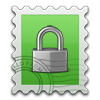

Провайдеры электронной почты - кого выбрать?
- Введение -- Список провайдеров -
- Google, Яндекс, Outlook, Yahoo -
- Hushmail -
- VFEmail -
- FastMail -
- Scryptmail -
- SAFe-mail (safe-mail.net) -
- ProtonMail -
- Runbox -
- Mailfence -
- Safe-Mail (safe-mail.nl) -
- Neomailbox -
- Paranoid.email -
- CTemplar -
- KolabNow -
- Teknik -
- Tutanota -
- Cock.li -
- Dismail -
- StartMail -
- CounterMail -
- Posteo -
- RiseUp -
- Disroot -
- Autistici -
- Временный e-mail -
- Заключение -
- О шифровании -
- О законах, "охраняющих конфиденциальность" -
Введение
E-mail - отстой, но пока что мы вынуждены его использовать. Что нужно принять во внимание при выборе поставщика услуг электронной почты? Прежде всего их политику конфиденциальности - то есть: какие данные о вас они собирают и хранят, и насколько долго - а также с кем ещё они этими данными делятся и на каких условиях. Само собой разумеется, что этой информации нельзя слепо доверять - вот некоторые тревожные знаки: немногословность и недосказанность, слишком много навязчивых, "продажных" разговоров о "приватности", противоречивые сведения и доводы. Всегда старайтесь найти в Интернете информацию о возможных скандалах и проколах, связанных с тем или иным провайдером! Другие важные критерии: поддержка почтовых программ (почта в браузере отвратительна, у вас нет над ней никакого контроля); возможность регистрации через Tor / VPN; платность или бесплатность услуг (и хотя лучше заплатить за хорошую почту, чем страдать от дурной халявы, не волнуйтесь - самые лучшие провайдеры в этом списке предоставляют услуги бесплатно). Другая вещь, о которой следует беспокоиться - гарантия, что провайдер не свернёт деятельность - если какая-то почта существует уже 10 лет, можно довольно смело утверждать, что она продержится ещё столько же. Почтовый сервер, который держится на одном человеке - всё равно что бомба с часовым механизмом. А что насчёт шифрования? Для меня встроенное шифрование всего лишь иллюзия - оно осуществимо разными способами, но ничто не заменит PGP с вашими личными ключами. И конечно, встроенное шифрование требует использования браузерной почты, тогда как PGP можно использовать через почтовые программы (у некоторых, например у Claws Mail, есть даже внутренняя поддержка). Так, покончим с любезностями - перейдём непосредственно к анализу поставщиков!
Список провайдеров
 Google, Yahoo, Outlook, Яндекс
Google, Yahoo, Outlook, Яндекс
Эти созданы для того, чтобы собрать о вас как можно больше сведений, и конечно же использовать их нельзя. Добавить нечего. Поэтому перейдём к тем, которые уважают частную жизнь (или притворяются таковыми).
 Hushmail
Hushmail
У каждого есть право конфиденциальной переписки по email. Верните контроль над своими данными и попробуйте чистую почту без рекламы.
Хорошо, я за! Только минутку, дайте проверить соответствие ваших слов действительности...
Когда вы посещаете наш сайт, мы можем собрать о вас информацию, включая тип вашего браузера, операционную систему и IP-адрес вашего компьютера. Мы используем эту информацию для облегчения вашего доступа к сайту, для сбора информации о потребителях и для предотвращения использования наших услуг в недобросовестных целях.
Нет уж, спасибо. Но погодите, это касается только их сайта - я бы мог смириться с этим, если бы сама почта была конфиденциальной. Но так ли это?
Мы делаем всё возможное, чтобы ограничить объём собираемых нами личных данных.Класс, спасибочки! Давайте же проверим, насколько "ограничен" этот "объём":
В ходе создания почтового аккаунта нам потребуется записать ваш IP-адрес. Мы также можем попросить вас предоставить другую информацию, например номер вашего телефона. Мы используем полученные данные для анализа рыночных тенденций, широкого демографического анализа [...]
Хороша "ограниченность" - просить мой номер телефона. А тут ещё и рыночное-трендовое говно всплывает наружу.
Сохраняемая нами информация может включать [...] имена пользовательских аккаунтов, адреса отправителей и получателей почты, имена вложенных файлов, темы писем, гиперссылки в основной части незашифрованных сообщений, и любую другую информацию которую мы посчитаем нужной удержать для поддержания работы системы и предотвращения злоумышленного её использования.
Так вы будете подсматривать даже за ссылками в моих сообщениях! А любая другая информация
по сути вообще означает, что они могут обрабатывать всё, что им вздумается. Но зачем же притворяться что это нужно для предотвращения злоумышленного использования
? Просто скажите, что профессионально занимаетесь сбором данных.
Мы храним информацию о продажах, маркетинге и обслуживании клиентов совместно с третьими сторонами, заинтересованными в данных деловых процессах, из чего следует, что такая информация как ваше имя, электронный почтовый адрес, номер телефона и название компании, а также история переписки, прямо относящаяся к купле-продаже или обслуживанию клиента, может храниться у данных сторон.
Теперь ещё и моё имя и телефонный номер отправляют хрен знает куда. Что может быть ещё хуже?
Сведения о вашей деятельности, хранимые нами, удаляются без возможности восстановления примерно через 18 месяцев. Сведения, используемые для статистических расчётов могут храниться неограниченно долго.
...да, оказывается может быть и ещё хуже. И это ещё не всё (я не собираюсь писать здесь книгу!) - зацените их политику конфиденциальности (архив) если вам нравится причинять себе боль.
Я забыл сказать, что Hushmail ещё и хочет денег за это издевательство! И оно не поддерживает почтовых программ. Собрав всё вместе, можно без всяких колебаний назвать его наихудшим выбором в нашем списке. А ещё у них хватает наглости заявлять следующее:
Hushmail предоставляет надёжные, конфиденциальные и зашифрованные решения браузерной электронной почты с 1999 года. Вот почему наши клиенты доверяют нашему опыту на данном поприще.
Ага, как же - только вам и доверять!
 VFEmail
VFEmail
При регистрации требует прохождения "рекапчи", а также ваши настоящие имя и фамилию. Много подозрительного в пользовательском соглашении; на описание всего этого уйдёт целый год, так что отмечу только самое важное:
[...] VFEmail.net вправе закрыть и/или заменить и/или изменить вашу учётную запись [...]
Стоп, изменить мой аккаунт? Какого хрена? Это может значить вообще всё что угодно, включая редактирование ваших сообщений, удаление контактов или изменение пароля. Чертовски подозрительно!
[...] VFEmail.net или её сотрудник могут открыть информацию о Пользователе и характере использования им Услуг третьим лицам [...]
Замечательно! Приготовьтесь к тому, что ваши личные данные будут раздавать налево и направо рекламщикам и аналитикам.
Пользователь признаёт и даёт своё согласие, что содержимое, куда входят помимо прочего текст, программное обеспечение, музыка, звук, фотографии, изображения, видеоклипы или другие материалы, составляющие рекламу от спонсоров или информация, представляемая Пользователю через Услуги или рекламу защищены авторским правом, торговыми марками, марками услуг, патентами или другими проприетарными правами и законами.
То есть вам будут совать рекламу, а вы ещё и не имеете права её кому-то показывать.
При бесплатном аккаунте у вас даже не будет возможности SSL-шифрования почты. Поэтому сообщения будут передаваться как обычный текст, который спокойно может прочитать, к примеру, ваш интернет-провайдер. Есть возможность заплатить и получить ряд бесполезных функций, но ужасные условия использования всё равно остаются в силе. Но тут есть и над чем посмеяться...
Если вы получите почту в период между вашим последним соединением с сервером POP и снимком системы в 0:00, резервные копии сообщений будут храниться неделю - но если почта придёт в субботу ночью, то письма хранятся год.
WTF? Похоже что они занимаются троллингом. Копии ваших писем хранятся неделю... но только не по субботам! Как странно.
Относительно данных, вам не сообщают что именно будет храниться и как долго. Если ещё не поняли - держитесь подальше от этого дерьма!
Честное слово, видимо какие-то шутники взяли все способы унизить пользователя, развернули рекламную кампанию с ерундой вроде
Смягчителя Метаданных™
- за который вам, конечно, нужно заплатить - и начали весело грести денежки. По-моему, они ещё хуже чем Gmail, который более откровенен насчёт (отсутствия)
конфиденциальности и предоставляет свои услуги бесплатно.
 FastMail
FastMail
Это ещё один платный провайдер, абсолютно ужасный с точки зрения конфиденциальности. Выдержки из их политики конфиденциальности (архив):
При регистрации с целью использования, или при использовании наших сайтов или услуг [...] информация личного характера, которая может быть получена непосредственно от вас включает ваше имя, адрес счёта, номер мобильного телефона, название компании, ваше доменное имя, IP-адрес, user-agent браузера и детализацию выплат
Имя, телефонный номер, адрес. Быстро стартуем в ад для приватности, FastMail.
Мы обрабатываем входящую и исходящую почту на вашем аккаунте для борьбы со спамом и мошенничеством.
"Уважающий приватность" FastMail читает вашу почту.
Мы также храним на наших серверах информацию из вашей адресной книги, календаря, заметок и файлов.
А есть что-нибудь, что вы не храните?
Мы также собираем данные электронной почты, создаваемые и загружаемые вами, а также получаемые вами от других людей
Похоже что такого нет - даже другие люди не скроются от пристального взгляда FastMail.
Всякий раз, когда вы используете наши услуги, мы записываем ваш IP-адрес, ваш клиентский идентификатор (информацию о браузере или почтовой программе) и ваше пользовательское имя. Когда вы отправляете письма, мы также сохраняем адреса отправителя и получателя. Когда вы выполняете действия над почтой в вашем ящике, мы также записываем их последовательность.
Другими словами, каждое ваше движение отслеживают и записывают. А теперь немного юмора - посмотрим что они скажут в своё оправдание:
Эти меры необходимы для возможности подтверждения доставки и проверки на мошенничество.
Да вы что. Тогда мне интересно, почему тогда почти никто другой в этом списке такими вещами не занимается? Теперь посмотрим на другое объяснение (из раздела Как мы используем собираемую от вас персональную информацию?
):
для аналитики и измерений, позволяющих нам иметь представление о том, как используются наши услуги;
А, так значит это всё нужно было для аналитики, а не для "проверки на мошенничество" или другой дурацкой отговорки. А вот и ещё более инкриминирующая находка (из раздела Разглашение персональной информации
):
Мы вправе делиться информацией о вас [...] с третьими сторонами, которые оказывают нам помощь в управлении бизнесом и поставляют услуги [...] Некоторые из этих поставщиков используют "облачные" IT-приложения или системы, что означает, что ваша персональная информация будет храниться на их серверах
Теперь всё то, о чём упоминалось ранее, будет ещё и в руках "третьих сторон".
Мы можем использовать ваше имя и адрес электронной почты, чтобы напрямую связывать вас с рынком и информировать вас о наших или сопутствующих услугах, которые, как мы считаем, будут вам интересны
Вы ещё и утонете в море рекламы, направленной специально на вас. Но как FastMail будет знать что вам интересно
? Конечно же благодаря собранным данным - которые, вспомните - включают содержание ваших писем!
Далее они заявляют, что не составляют на вас профиль для отправки целевой рекламы, но это, кажется, противоречит сказанному выше - и мы должны всегда ожидать худшего.
Также FastMail пользуется услугами аналитики Matomo, подробнее о которой расскажу в главе про ProtonMail. Так или иначе, данных они собирают достаточно много - но как долго они хранятся?
Вся записываемая нами информация, относящаяся к вашему IP-адресу, удерживается примерно в течение 90 дней.
При отправлении вами запроса на удаление вашего аккаунта из нашей системы, мы немедленно блокируем учётную запись и архивируем информацию, послу чего удаляем её с наших серверов примерно в течение 7 дней с момента вашего запроса.
Вроде неплохо. Учитывая что некоторые провайдеры ждут год и того больше... Хотя погодите:
Однако, при определённых, специфических обстоятельствах мы можем хранить вашу личную информацию дольше
Ха! Так 7 дней были всего лишь очередной уловкой. Позвольте также процитировать интересную информацию из другого раздела (архив):
После закрытия аккаунта данные и их копии стираются в период от 37 дней до 1 года с момента закрытия
Так всё-таки они ждут целый год. И у вас хватило наглости врать прямо нам в лицо, говоря о 7 днях. Всё больше и больше это напоминает троллинг для наивных новичков... В свете сказанного выше, можно ли сказать о FastMail что-то хорошее? Наверно вот это:
Невозможно осуществить безопасное сквозное шифрование через браузерную почту. Есть только два способа, оба с недостатками:
Верно - именно об этом я и говорил выше. Так что по крайней мере они не притворяются, что используют навороченную систему шифрования прямо в браузере. И может вот ещё что:
Мы не предоставляем никаких данных без обязательного законного разрешения от суда Австралии. Как австралийская компания, мы не принимаем американских ордеров.
Но не забывайте, что часть ваших данных будет храниться на серверах третьих лиц, которые могут находиться в других странах и иметь иные взгляды... В общем и целом, мне трудно найти причину для пользования ящиком FastMail. Количество хранимых данных попросту огромно (и я рассказал лишь про часть из них), и они отсылаются третьим лицам и используются для рекламирования вам товаров и услуг - а вам ещё и за это платить.
 Scryptmail
Scryptmail
Пробный период в 7 дней, потом плати. Нет поддержки почтовых программ. Заявляет, что шифрует метаданные и заголовки, а не только содержимое писем. Блог и форум техподдержки, по всей видимости, заброшены; ЧаВО тоже устарели - говорится, что Scryptmail существует всего год, а на самом деле уже четыре.
Что же насчёт конфиденциальности? Сайт использует аналитику Matomo, описанную в главе о ProtonMail. А сама почта? Согласно их политике конфиденциальности (архив), всякий раз, когда идёт связь между двумя аккаунтами Scryptmail, записываются только метаданные времени отправки
. С другой стороны, если на ваш аккаунт Scryptmail приходит письмо с сервера другого почтового провайдера, будет собрано больше данных, включая:
email-адреса отправителей и получателей, IP-адрес отправителя, тему сообщения, главную часть письма и вложения, а также время отправки и получения.
Помимо этого записываются: время последнего входа в систему, IP-адрес, User agent, вызов API.
Но они утверждают, что при этом не могут сопоставить IP-адрес конкретной учётной записи.
Что противоречит их предыдущим заявлениям, поскольку они знают даты логина аккаунтов вместе с их IP-адресами. Возможно, что информация о конкретном аккаунте ими стирается, но заявления об "абсолютной невозможности" связать эти два факта - ложь.
Можете быть уверены, что информацию о вас будут хранить вечно. Из раздела об Удержании Данных: Данные об активных аккаунтах хранятся неограниченное время.
А что с удалёнными аккаунтами?
Ваши личные данные будут удалены не позднее конца календарного года, следующего за годом расторжения договора, исключая индивидуальные случаи, в которых к договору применяются специфические поправки. [...] Кроме того, удаление данных об инвентаре и счетах может не производиться, если того требуют правовое вмешательство или судебное преследование.
Вкратце: ящик платный, нет поддержки почтовых программ, двусмысленная и противоречивая политика конфиденциальности, значительный объём хранящихся данных, которые к тому же не подлежат удалению вообще. Отстой!
 SAFe-mail (safe-mail.net)
SAFe-mail (safe-mail.net)
Израильский провайдер, основанный в 1999 году. Прежде чем я перейду к самой сути вопроса, давайте обратимся к первым впечатлениям. Я говорю о структуре сайта и грамотности языка на нём, достойных шимпанзе - из-за этого извлечение какой-либо информации из сайта уже само по себе - та ещё загадка. В основном здесь всё из доисторических времён, и некоторые разделы противоречат друг другу. У них было, чёрт возьми, 20 лет на то, чтобы сделать нормальный сайт вместо этого чудовища... но попробуем всё же в нём разобраться:
SAFe-mail хочет казаться уважающим частную жизнь, но не имеет какой-либо политики конфиденциальности. Есть только обрывок из 2008 года, гласящий:
Safe-mail.net не использует куки и не собирает данные о пользователях. Safe-mail.net не передаёт, продаёт, выменивает или каким-либо ещё образом обменивается данными, которые может иметь о своих пользователях, с какой-либо сторонней компанией.
То есть они якобы не собирают ВООБЩЕ никаких данных о пользователях. Почему же тогда они потрудились ещё и сказать что они не продают эти данные? Погодите, вот ещё что: (из пользовательского соглашения) (архив)
ООО SAFe-mail не открывает информацию о вас или о вашем пользовании системой SAFe-mail, за исключением...
Так значит у вас всё же ЕСТЬ данные о пользователях...
Вы даёте своё согласие, что SAFe-mail вправе получить доступ к вашей учётной записи, включая её содержимое, по указанным причинам или для техобслуживания или по иным техническим причинам.
То есть теперь вы признаётесь, что можете залезть даже в содержимое моего аккаунта? Разве это не признание в том, что вы можете читать нашу почту?
Пожалуйста обратите внимание на то, что ваш IP-адрес передаётся с каждым письмом, отправленным с вашего аккаунта.
Да ладно. Но нам больше интересно то, хранит ли SAFe-mail этот IP-адрес и другие сведения и если да, то как долго - а об этом информации просто нет. Разве не подозрительно? SAFe-mail столько времени тратит на заявления о высоком уровне приватности, и при этом странным образом не хочет говорить о том, какие данные собирает; по правде говоря, вам нужно читать между строк чтобы понять хранит ли он вообще что-нибудь или нет. Как по мне, здесь пахнет сыром в мышеловке.
Бесплатный аккаунт не поддерживает отправку почты через программу, только получение. Другие заявленные функции для конфиденциальности как SafeBox также требуют платного аккаунта. И конечно, заплатив за услуги, вы потеряете анонимность - они не принимают биткоинов. При регистрации у вас просят настоящее имя и номер телефона; каждый аккаунт одобряется вручную. Попробовал зарегаться через Tor, оставив поле номера телефона пустым - но дав имя, звучащее как настоящее - и не получил подтверждения через два дня. Но у одного из моих читателей получилось войти в свой аккаунт через день. Так или иначе, всё это похоже на ловушку и НЕ рекомендуется к использованию.
 ProtonMail
ProtonMail
Популярнейший "приватный" email-провайдер, и часто первый выбор того, кто пытается уйти от трёх гигантов. Но насколько качественны его услуги? Начнём с процедуры регистрации - при регистрации через Tor или VPN ProtonMail требует подтверждения по SMS, которое они обещают не хранить - но доказать это невозможно. Их "сквозное" шифрование работает путём генерирования ключей при регистрации - использовать свой собственный ключ не разрешается. Из-за того, что всё шифрование производится в браузере посредством JavaScript, ничто не мешает им подсунуть вам заведомо уязвимый скрипт; также, зашифрованные сообщения можно отправлять только другим пользователям ProtonMail, если только у вас не платный аккаунт. Согласно исследованиям, методы шифрования ProtonMail имеют серьёзные недостатки. В конце данного анализа я также ссылаюсь на статью, детально описывающую общие проблемы, связанные с шифрованием внутри браузера. Почтовые программы не поддерживаются если только, опять же, не заплатить за функцию "Protonmail Bridge" - которая всё равно не позволяет использовать свои ключи.
Но давайте оставим все эти примочки и посмотрим, что за данные ProtonMail хранит и как долго. Цитируя их политику конфиденциальности (архив):
Мы используем локальную версию Matomo, инструмента для аналитики с открытым исходным кодом. Данные аналитики по возможности анонимны и хранятся локально (а не на "облаке").
Значит когда вы посещаете сайт, это Matomo за вами следит. Но какие данные они действительно собирают? Информация с сайта Matomo (архив):
Все стандартные статистические отчёты: популярные ключевые слова и поисковые системы, сайты, социальные сети, ссылки на популярные страницы, названия страниц, география пользователей, провайдеры, операционные системы, рыночная доля браузеров, разрешение экрана, доступ с мобильника или компьютера, характер использования (время, проведённое на сайте, количество посещённых страниц, регулярность посещений), популярные кампании, нестандартные переменные, популярные первые/последние страницы, загруженные файлы, и многое другое, распределённое на четыре главные категории аналитических отчётов – Посетители, Действия, Референты, Цели/Электронная коммерция (более 30 отчётов)
Так это про сайты. Что же про электронную почту?
у нас есть доступ к следующим метаданным email: email-адреса отправителя и получателя, IP-адрес отправителя входящих сообщений, тема сообщения, а также время отправки и получения. [...] Мы также имеем доступ к следующим данным о деятельности аккаунта: количество отправленных сообщений, объём занятого хранилища, суммарное количество сообщений, время последнего входа.
Класс, ещё больше метаданных, чем у Tutanota (если вы доверяете Tutanota насчёт собираемых ими данных). А тут ещё такое:
При закрытии аккаунта ProtonMail данные немедленно удаляются с серверов. Данные активных аккаунтов хранятся неограниченно долго. Удалённые сообщения также безвозвратно удаляются с наших серверов. Удалённая информация может оставаться в наших резервных копиях до 14 дней.
Перечитайте ещё раз! Бесконечное удержание данных от "приватного" ProtonMail! А 14 дней хранения удалённых данных вполне достаточно, чтобы "они" вас достали. По крайней мере диски шифруются...
Если вы прочитаете их отчёт о прозрачности (архив), то увидите довольно много запросов на доступ к их данным со стороны правительств стран всего мира. ProtonMail делает вид, что "требует ордер от суда Швейцарии" для сотрудничества - но видно, что они часто соглашаются на это и без ордера - так что не надейтесь, что это вас защитит. Печально известен пример мая 2018 года, когда они отключили один аккаунт якобы из-за связей с террористами - а мы все прекрасно знаем, какой это удобный предлог в наши дни, не так ли? Итак, что мы имеем - провайдер, который не поддерживает клиентские почтовые программы, следит за вами на официальном сайте, сохраняет ваши метаданные навеки и незамедлительно выдаёт их всякий раз как люди в чёрном стучат в дверь и кричат "терроризм!". Также их шифрование ущербно по данным исследователей, и не может быть использовано для собеседников с ящиками не на ProtonMail при бесплатном аккаунте. И после всего этого они называют себя чемпионами приватности... Как оказалось при глубоком анализе, ProtonMail - это просто бумажный тигр.
 Runbox
Runbox
Их сайт настолько изобилует разговорами о приватности, что удивительно, как они смогли втиснуть туда что-то ещё. Не буду утруждать себя цитированием всего этого; посмотрим лучше, стоит ли чего-то их слово (спойлер: не стоит). Из их политики конфиденциальности (архив):
Регистрируя учётную запись, вы даёте согласие на обработку нами следующих персональных данных: Имени, фамилии, названия компании (если имеется), номера мобильного телефона (если имеется), страны и альтернативного email-адреса. [...] Для аннулирования данного соглашения вы обязуетесь прекратить использование Услуг
Вы уж конечно простите, Runbox, но требовать моё имя - это точно не конфиденциально. Первое впечатление уже испорчено... и это только начало.
Информация о вашем Аккаунте хранится на серверах, расположенных в Норвегии, до тех пор, пока активен ваш аккаунт...
Супер, то есть я должен уничтожить свой аккаунт чтобы вы, ребята, перестали хранить сведения обо мне. И после этого вы наконец сотрёте мои данные, так?
...и: до 1 месяца после закрытия пробных аккаунтов; или до 5 лет после закрытия обычных аккаунтов, так как записи о финансах должны храниться 5 лет согласно Норвежскому Бухгалтерскому Праву.
Нет блин, конечно ничего не сотрётся - это будет слишком уж приватно для "обожающего приватность" Runbox. Значит ждём пять лет после удаления аккаунта, и ваше имя исчезнет из их базы данных ...или нет?
Резервные копии информации об Аккаунте хранятся на надёжных серверах, расположенных отдельно от системы Runbox, на срок до 6 месяцев даже после удаления информации из главного хранилища.
О нет, любящий приватность Runbox бьёт все рекорды, установленные богами приватности - Google и Yahoo; пройдёт пять с половиной лет прежде чем данные о вас исчезнут с их серверов! О Runbox, каким ещё образом ты будешь защищать мою частную жизнь?
Содержимое обслуживания email (данные, относящиеся к Услугам Веб-почты, Контактов и Файлов) хранится в главном хранилище на серверах в Норвегии на всё время активности вашего аккаунта, плюс: до 3 месяцев после закрытия пробных аккаунтов; или до 6 месяцев после закрытия обычных аккаунтов.
Так что вся ваша почта и метаданные (отправитель, получатель, тема, дата/время) сохраняются пока существует ваш аккаунт. Плюс резервные копии, которые хранятся ещё дольше. Нужно ли продолжать эту пытку? Хорошо, давайте сделаем контрольный выстрел и покончим с этим: Runbox за свои "услуги" просит деньги! Похоже на последний гвоздь в гробу? Серьёзно, они как платный Gmail... но стойте, вот ещё что: (Всё, на этом закругляюсь, обещаю!)
Если вы свяжетесь с нами по e-mail, обычной почте или по другим каналам коммуникации, мы сохраним эту переписку и всю информацию в ней.
Из положительных сторон отмечу, что они принимают биткоины... и вы можете использовать почтовые программы. Ещё есть 30-дневный "бесплатный" пробный период. Ах да, ещё они пользуются возобновляемыми источниками энергии (но это же справедливо и для по-настоящему конфиденциального Posteo, о котором позже) - пожалуй единственное, за что их "услуги" можно действительно похвалить. Но из-за кошмарной политики сбора и хранения данных, лучше держаться подальше.
 Mailfence
Mailfence
Мы убеждены в том, что интернет-конфиденциальность - базовое право каждого человека, на соблюдение которого больше нельзя просто надеяться. Поэтому мы решили, что пришло время предложить услуги полностью конфиденциальной электронной почты.
Это я уже слышал и раньше. Посмотрим, как это заявление соотносится с вашей политикой конфиденциальности (архив)...
Мы пользуемся локальной версией Matomo [...]
Опять эта срань. Читайте раздел о ProtonMail, чтобы понять, сколько в ней дерьма.
Мы собираем IP-адреса, ID сообщений, адреса отправителя и получателя, темы писем, версии браузеров, информацию о стране и даты.
Уже тревожный знак... но проверим также, как долго всё это хранится:
Мы удерживаем копии удалённых сообщений и документов в течение 45 дней.
Ну прямо очень конфиденциальные. А вот и оправдание:
Это нужно для восстановления данных в случае непреднамеренного их удаления пользователями. После 45 дней данные будут удалены из всех наших систем.
Да, как же - всё всегда делается "на благо пользователя". Но в конце-то концов, удалённая вами почта остаётся на серверах 45 дней, независимо от причины. И если бы только это...
При закрытии аккаунта данные будут безвозвратно удалены через 30 дней после предписанной законом даты (т.е. согласно закону Бельгии, это 365 дней с момента закрытия аккаунта).
То есть будете ждать больше года прежде чем ваш "удалённый" аккаунт действительно уничтожат. Замечательная конфиденциальность.
Mailfence делает большой акцент на то, что их защищают сильные бельгийские законы о приватности - однако эти законы не только были разоблачены ранее, но и вообще имеют сомнительную действенность
Регистрационные поля требуют JavaScript и просят ваше реальное имя - но вы можете дать фиктивное; аккаунт утверждается сразу, без задержки. Поддержка почтовых программ только платная; но они принимают биткоины. Разрешает импорт своих PGP-ключей, но шифрование всё равно идёт через браузер. В целом - без поддержки почтовых программ для бесплатного аккаунта и с обескураживающей политикой конфиденциальности, несмотря на громкие заявления - остаётся о нём забыть.
 Safe-Mail (safe-mail.nl)
Safe-Mail (safe-mail.nl)
Перейдём сразу к сути:
Команда Safe-Mail - это горстка энтузиастов с чётким пониманием конфиденциальности. И мы желаем предоставить всем возможность сделать свою частную жизнь неприкосновенной. Сообщество Safe-Mail хочет дать миру знать, что конфиденциальность - это наше законное право, и мы готовы за него бороться.Здорово, и всё же...
Провайдер не просматривает сообщения или другое содержимое, хранящееся на Safe-Mail.nl, если только не имеет законных обязательств (это означает только по приказу суда!!).То есть вы всё-таки можете читать чужие сообщения? Так или иначе, они не будут оспаривать судебный ордер. Вот вам и вся борьба за
законное право на конфиденциальность.
Мы не удерживаем никакой информации о пользователях помимо той, что вы указываете при регистрации.К сожалению, эта информация включает моё имя и место жительства (думается, можно подкинуть и фиктивные, но всё же...).
У Safe-Mail.nl нет настоящей политики конфиденциальности, поэтому ориентироваться мы можем только по обрывочным сведениям, данным выше и одному разделу их ЧаВО - Что вы записываете? - который гласит:
Вся система Safe-Mail использует разные файлы журналов, к которым нам нужно обращаться в случае неполадок в системе. Это носит название техобслуживания и необходимо для поддержания нашей системы Safe-Mail в хорошем состоянии. Мы прекрасно понимаем, что мысль о том, что ваша анонимность фактически неполная, причиняет вам дискомфорт, но мы также не можем сказать, что ничего не записываем. Но мы убеждены, что журналы семидневной и большей давности для нас бесполезны. Особенно если они содержат информацию об обслуживании. Поэтому мы решили, что все записи со "специфической" информацией будут удаляться с сервера через 7 дней. Файлы журналов только занимают лишнее место, а мы хотим сэкономить его для более важных целей. Но это не означает, что вы можете использовать систему в недобросовестных целях. Есть правила, и нам кажется, что вы все знаете что это за правила. Мы здесь боремся за неприкосновенность частной жизни, но не поощряем противоправных деяний. Пожалуйста, подумайте хорошенько, прежде чем использовать систему Safe-Mail.
Весьма размыто - помните, что недосказанность - повод тревожиться - но "специфические" данные (что бы это ни значило) вроде как остаются только на 7 дней.
Бесплатный аккаунт не поддерживает почтовых программ. Но они принимают биткоины, так что теоретически у вас может быть анонимный аккаунт с поддержкой клиентских программ. Даже при бесплатном аккаунте вы можете загрузить сертификат S/MIME для сквозного шифрования, но в отличие от PGP, здесь нужно полагаться на подлинность сертификата - подобно SSL.
Может я немного несправедлив по отношению к этому провайдеру - но если есть целиком БЕСПЛАТНЫЕ сервера с поддержкой программ - которые к тому же не спрашивают ваше настоящее имя - и ДЕЙСТВИТЕЛЬНО будут стараться обеспечить вам приватность - использовать стоит только их.
 Neomailbox
Платный - 50$ за год; принимает биткоины. Поддерживает программы для почты. Соглашение запрещает вам отзываться плохо об их сервисе (lol) - не публиковать или отправлять ложные, зловредные, уничижительные или клеветнические комментарии о Neomailbox или техподдержке Neomailbox в любой форме в реальном или виртуальном пространстве
. Как с конфиденциальностью? Мало что сказано кроме:
Мы храним записи о трафике SMTP в течение 60 дней для анализа производительности и предотвращения злоумышленного использования. Журналы анонимных посещений сайта стираются каждые 10 минут.
Из другой части их сайта:
Мы не сохраняем журналы или данные о клиентах помимо того, что абсолютно необходимо для поддержания производительности и безопасности наших серверов. Мы не храним ваш IP-адрес. Все записи удаляются каждые 7 дней.
Стоп, это же противоречит предыдущей цитате. То есть они не объяснили ничего прямо - плохой знак; такое чувство, что они не хотят, чтобы вы знали всё о хранимых ими данных. Вы должны быть готовы к худшему - то есть что вашу почту и метаданные могут хранить до 60 дней. Также обратите внимание на это:
Следующее заявление соответствует истине на 1 октября 2018 года: Neomailbox никогда не открывал доступ к данным клиентов никаким правительственным агентствам или иным структурам.
Это хорошо. Но факт остаётся фактом - вы не только платите за хранение ваших данных в течение 60 дней, но ещё и не вправе критиковать компанию. По крайней мере у них есть шифрование дисков и одноразовые адреса... в любом случае, как платный почтовый ящик Neomailbox довольно плох; и есть бесплатные службы, которые полностью оставляют его не у дел.
Paranoid
Представляет себя как глубоко ориентированный на конфиденциальность, с заявлениями типа Наша миссия - возвратить людям чувство уединённости.
и Вернуть конфиденциальность ежедневной коммуникации по email и сделать её максимально популярной.
Однако, у провайдера нет политики конфиденциальности, так что неизвестно, что они на самом деле хранят. Они говорят, что являются ПОЖАЛУЙ ЕДИНСТВЕННЫМ ПОЧТОВЫМ ЯЩИКОМ С OPENPGP-ШИФРОВАНИЕМ
,
но это неверно - даже у мерзких ProtonMail и MailFence
оно имеется (хотя и реализовано хуже). Поддерживает почтовые программы и имеет onion-домен. Но вот большая запятая - Paranoid требует инвайта,
который я пытался достать пару дней назад. Первый раз мне сказали, что мой адрес на cock.li является "одноразовым" и не будет принят. Затем я зарегистрировался используя настоящий аккаунт от disroot - и хотя ошибка об одноразовых адресах не появилась - я всё равно не получил ответа, прождав примерно 5 дней. Один из моих контактов сказал, что его друзья запрашивали регистрацию несколько месяцев назад и до сих пор не получили ответа. Поэтому, вне зависимости от конфиденциальности, Paranoid оказался довольно бесполезным.
 CTemplar
CTemplar
- Я посвятил этой проблеме целый раздел в конце статьи, поэтому прочитайте, если вам интересно. Политика конфиденциальности (архив)
подробно не освещает, какие данные собираются - помимо того, что сайт использует отслеживающие пиксели и неявных признаний в сборе и накоплении данных об использовании (Мы не предоставляем собранную информацию об отслеживании и использовании третьим сторонам.
). Вас также отслеживают через email, который они вам пошлют - Отправляя вам сообщение, мы можем поместить в него небольшой код, чтобы узнать, можете ли вы получать HTML-изображения и просматриваете и/или переходите вы по ссылкам в нашем сообщении.
Но похоже, что от этого можно отказаться.
Чтобы выяснить их политику сбора данных, мы должны вместо этого посетить Страницу о безопасности (архив). Там CTemplar заявляет, что не хранит ваш IP-адрес, но не говорит ничего о метаданных или о чём-либо ещё. И хотя отказ от хранения IP - это здорово, от нас скрывают другую важную информацию. Может быть в их ЧаВО что-то найдётся? Оказывается да. Можете удалить аккаунт в любое время, и от него ничего не останется. Пока неплохо (кроме проблем с метаданными...). Почему такая немногословность? CTemplar ужасно гордится тем, что находится под эгидой Самых Строгих В Мире Законов Защиты Персональных Данных
, и пока я проводил исследование для составления раздела о законах, я решил проверить, чем же так хороши законы Исландии. И таким образом, друзья мои, я понял почему CTemplar не обмолвился о ваших метаданных! Из https://www.ivpn.net/internet-privacy-laws-in-iceland:
Однако, в свете вышесказанного следует упомянуть, что Исландия утвердила Акт Об Электронных Коммуникациях 81/2003, где были введены требования к удержанию данных. Этого, похоже, требовало вхождение Исландии в Европейскую Экономическую Зону (ЕЭЗ). Исландский закон об удержании данных распространяется на поставщиков телекоммуникаций и требует от них удержания записей на шесть месяцев.
Вот оно! CTemplar хранит ваши метаданные 6 месяцев и не говорит вам об этом, чтобы не спалить свою легенду о нахождении в супер-конфиденциальной стране. Честно говоря, прочитав дальше, я перестал быть на 100% уверен в верности своего толкования их законов (эй, юристам тоже нужна работа...) - но даже если оно и неверно, почему же, блин, CTemplar молчит насчёт метаданных? По мере того, как копаешь глубже, обнаруживаются другие трещины. Прежде всего, CTemplar требует прохождения эксплуататорской ReCaptch'и для регистрации. Нет поддержки почтовых программ - и хотя она якобы планируется, скорее всего будет использоваться их собственная программа. Откуда я знаю? Из их Условий Использования:
В случае, если мы предлагаем загрузку программного обеспечения в рамках Услуг и вы загружаете данное ПО, программа, включая любые файлы, изображения, включённые или создаваемые данным ПО, и данные, сопровождающие ПО (под общим термином "Программное Обеспечение") отпускаются вам по лицензии от нас или лицензиаров третьих сторон для пользования согласно Условиям. Использование вами Программного Обеспечения может регулироваться дополнительными условиями, которые могут быть включены вместе с ПО. Пожалуйста внимательно ознакомьтесь со всеми дополнительными условиями, чтобы иметь полное представление об условиях использования такого ПО. Мы не передаём вам право владения Программным Обеспечением. Вы не вправе копировать, воспроизводить, распространять или каким-либо ещё образом эксплуатировать ПО или декомпилировать, взламывать, разбирать или иным образом сводить ПО к понимаемой человеком форме. Обратите внимание, что при установке определённых приложений, которые могут быть доступны через Услуги, вы соглашаетесь на загрузку ПО на ваше Интернет-Устройство и принимаете данные Условия и любые дополнительные условия, относящиеся к данному приложению.
Что они ещё могут иметь в виду под загадочными словами "Программное Обеспечение", кроме как почтовую программу? Больше ничего не приходит в голову. Так что если они со временем создадут её, она будет проприетарной, и условия запретят вам изучать и изменять её устройство. А если они предложат ещё какую-нибудь программу, эти кошмарные условия будут распространяться и на неё. В Пользовательском Соглашении есть ещё кое-какое подозрительное дерьмо:
К примеру, вы не можете использовать Услуги так, чтобы [...] получить доступ к Услугам или Содержимому используя любой интерфейс, отличный от интерфейса, который предоставляем мы, или пытаться "скрести" или "собрать" Содержимое.
Исходя из цитаты выше, вам нельзя даже использовать что-то наподобие cURL или wget для взаимодействия с их дрянной веб-почтой. Они также признают, что могут пнуть вас под зад не объясняя причин:
В дополнение к другим нашим законным правам, мы можем ограничить или аннулировать вашу лицензию на пользование Услугами или некоторыми функциями Услуг в любое время и по любой причине, без предварительного уведомления, включая нашу уверенность в том, что вы нарушили данные Условия.
И помните - у CTemplar имеются платные аккаунты. И поскольку в вышеупомянутом тексте не сказано, что эти положения относятся только к бесплатным аккаунтам, смело полагайте что они могут отказать вам в оплаченной вами услуге - что называется обыкновенным воровством. Относительно выплат, они хранят счета 14 дней, но можно использовать биткоин.
Итог: на вид всё прекрасно, если вам нужно только скрыть свой IP (ещё они поддерживают Tor и даже имеют onion-домен) - но если вам захочется большего, репутация CTemplar начинает быстро рушиться. Не поддерживает почтовые программы, скорее всего хранит метаданные 6 месяцев, рабские Условия Пользования, не разрешающие web-scraping и позволяющие забанить вас ни за что. ReCaptcha как последний плевок в душу. Несмотря на поддержку Tor и отсутствие записей об IP, я не вижу особых причин использовать эту почту, разве что, может быть, в качестве одноразового аккаунта а-ля cock.li (но опять же, веб-почта, тьфу).
 KolabNow
KolabNow
Платный, для активации требует реальное имя и существующий e-mail адрес. Принимает биткоин. Много хвастовства насчёт приватности, куда входит заявление о защищённости надёжными швейцарскими законами о конфиденциальности. Такими как этот (архив), под действием которого они получили и приняли правительственный запрос на доступ к данным:
Причинение урона данным 1. Любой, кто без надлежащего разрешения изменяет, удаляет или делает недоступными данные, хранимые или передаваемые электронным или другим похожим способом может получить после жалобы до трёх лет лишения свободы или денежный штраф. Если нарушитель причинил значительный урон, может быть применено наказание в виде от одного года до пяти лет лишения свободы. Нарушение преследуется ex officio. 2. Любой, кто производит, импортирует, продаёт, рекламирует, предлагает или иным образом делает доступными программы, которые, как ему известно, или должно быть известно, будут использованы в целях, описанных выше в параграфе 1, или снабжает инструкциями по производству таких программ, может получить до трёх лет лишения свободы или денежный штраф. Если нарушитель искал денежной выгоды, может быть назначено наказание от одного года до пяти лет лишения свободы.
Я не совсем понимаю что именно значит вышесказанное - звучит как хакерство, но интерпретировать можно по-всякому (даже удаление собственных сообщений может попадать под удаляет или делает недоступными
). Я подробно разбираюсь с юридическими проблемами в конце этой статьи, так что перейдём к их политике конфиденциальности (архив). Там вообще ничего не говорится о собираемых ими данных, кроме Мы [...] гарантируем вам, что у третьих сторон нет доступа к вашим данным.
Ничего про сроки хранения данных или возможности удалить свой аккаунт, и что из этого следует. Может что-то тогда есть в Условиях Использования (архив):
Мы храним лишь минимум записей и отладочную информацию, чтобы быть уверенными в улучшении качества наших услуг и решении возможных проблем.
Минимум записей - да, это говорит о многом. Хмм... может раздел Правовые Рамки (архив) расскажет поконкретнее?
Это запросы на удержание данных. Законы Швейцарии требуют шестимесячного удержания данных провайдером. Сохранённые данные представляют собой метаданные, то есть информацию о том, что, когда и с кем устанавливал связь, но не само содержание этой связи.
Швейцарские законы о конфиденциальности в действии - но теперь по крайней мере мы знаем, какие данные хранит о нас KolabNow. Между прочим, их отчёт о прозрачности последний раз обновлялся в 2017 году, так что они могли получить ещё запросы с тех пор. И вообще, весь сайт, похоже, заброшен (даже их твиттер). В итоге я не вижу причин использовать их - платные, просят настоящее имя, хранят метаданные 6 месяцев и не сообщают ничего полезного в своей политике конфиденциальности. Как тогда бесплатный RiseUp умудряется хранить метаданные лишь один день - несмотря на то, что их сервера находятся в как будто бы не-конфиденциальных США - а провайдер с всесильными швейцарскими законами о конфиденциальности не может себе этого позволить? Похоже, что единственный плюс KolabNow - поддержка клиентских программ. И помимо этого может ещё и возможность расплатиться биткоинами - но раз есть провайдеры с бесплатными и более качественными услугами, кому это нужно?
 Teknik
Teknik
Для регистрации нужен инвайт-код. Есть поддержка почтовых программ. Есть полезная (как я полагаю) функция демонстрации вашего публичного PGP-ключа остальным, если вы его предоставите. Но политика конфиденциальности многое умалчивает:
Мы используем Piwik чтобы отследить взаимодействие пользователя с сайтом. Мы размещаем эту платформу на нашем локальном сервере, поэтому данные аналитики не выходят за его пределы.
Piwik недавно стал известен как Matomo, так что просто прочитайте главу о ProtonMail чтобы узнать о нём больше.
Даты - Когда вы выполняете действие (как то: регистрируете аккаунт), дата действия будет записана.
Я так понимаю, это относится ко всем действиям? Тогда это просто кошмар. Что дальше?
Письма - Любые электронные письма, которые вы отправляете или получаете используя адрес на Teknik.io хранятся локально, на сервере. Эти письма не читаются.
Спасибо за то, что не читаете мои письма... и на этом вся политика конфиденциальности Teknik заканчивается! Не сообщается, удаляется ли по-настоящему удалённая почта, делаются ли резервные копии, какие данные распространяются и на каких условиях. Вообще ничего! Я считаю, что это весьма подозрительно. По-моему, вообще не стоит и пытаться получить их инвайт, когда есть лучшие альтернативы, не требующие этого. ПРИМЕЧАНИЕ: Их браузерная почта конфликтует с расширением LinkBot, если пользуетесь им, отключите его на этом сайте.
 Tutanota
Tutanota
Это был мой первый провайдер после того как я начал беспокоиться о конфиденциальности и послал подальше Gmail и компанию. То было прежде чем я начал "копать глубже" - и само собой, больше я его не рекомендую. Не поддерживает почтовые программы; я раньше думал, что ими пользуются только динозавры, но теперь жить без них не могу. Шифрование работает только если вы до этого договорились о пароле с вашим собеседником (но если он/она тоже использует Tutanota, шифрование происходит автоматически) - и у этого, конечно, свои проблемы (как совершить безопасную передачу пароля?), которые уже решены в PGP. А поскольку Tutanota работает только в браузере или через их собственную дурацкую программу (которая, кажется, не отличается от браузерного варианта), им ничего не стоит внести изменения в код, чтобы отправить себе ваш пароль и расшифровать всю вашу переписку. Tutanota не поддерживает другие формы шифрования как PGP (и даже обсирает его на своём сайте [архив], хотя это единственное надёжное шифрование для email). В отличие от ProtonMail, шифрование Tutanota не прослушивалось третьими лицами; но в конце этой статьи я сошлюсь на источник, обсуждающий общие проблемы с шифрованием внутри браузера. Беспокойство вызывает также политика ведения журналов:
Чтобы поддерживать работу почтового сервера, а также для диагностики неполадок и предотвращения несанкционированного использования, журналы почтового сервера хранятся максимум 7 дней. Эти журналы содержат адреса отправителя и получателя почты и время установления связи, но не IP-адреса клиентов.
Нет IP-адресов? Отлично! Но только если вы не под VPN или Tor - Хранятся только анонимные IP-адреса, которые больше не являются по своей природе персональными данными.
Ну разве не гениальное оправдание? Ваш настоящий IP скрыт, поэтому ничего персонального... пока Tor или VPN не скомпрометируют. Также позже вы узнаете как одни только метаданные (которые Tutanota сохраняет) могут рассказать о вас гораздо больше, чем вы думаете.
Регистрация бесплатная, но тогда вы ограничены лишь одним аккаунтом. Если решите заплатить, будьте готовы к этому:
Для совершения выплат по банковской карте данные вашей карты будут отправлены нашему поставщику услуг по оплате Braintree. Это подразумевает отправку персональных данных в третью страну (США)
Позже они утверждают, что заключили "соглашение" с этой компанией о том, что ваши данные будут использоваться только для совершения выплаты - но сила этого "соглашения" ставится мной под сомнение. Ваши данные о выплате также хранятся неизвестно сколько времени:
Данные, относящиеся к совершению заказа, и адреса сторон, вовлечённых в заказ, хранятся согласно срокам, указанным в законе об удержании налоговых, договорных и коммерческих данных, и уничтожаются по истечении данных сроков.
Вкратце: без поддержки программ, хранит ваш анонимный IP и метаданные, неизвестно как долго (?) хранит данные о выплатах. Не ужасно, но и не прекрасно.
 Cock.li
Cock.li
Поначалу звучит неплохо - есть поддержка почтовых программ, не запрашивает персональных данных, позволяет регистрацию и использование через Tor и другие службы конфиденциальности,
и управляется "одним челом", а не корпорацией
. Мне удалось подтвердить, что он действительно поддерживает Tor - однако, используемое мной расширение прокси не сработало. Claws Mail не смог автоматически определить нужные настройки, но ручная настройка всё же возможна. Так этот ли провайдер стоит использовать? Чтобы выяснить, как обычно обратимся к собираемым им данным:
протоколы IMAP и SMTP включают: Время отправки письма, имя пользователя, адрес получателя и информацию о соединении (IP-адрес, информация о квоте), время подключения к IMAP, IP-адрес и имя пользователя (если имеется), использованные при входе и был ли вход успешным
Всё это, согласно его политике конфиденциальности (архив), хранится от 48 до 72 часов. Когда вы посещаете сайт, cock.li сохраняет следующее: данные о доступе к HTTP, содержащие ваш IP-адрес, user agent, и тип/расположение ваших запросов
Уверяет, что это не имеет отношения к вашему аккаунту, но связать их вместе не проблема.
Политика конфиденциальности Cock.li звучит неясно в этом месте, но видимо вы можете удалить все ваши данные вручную - кроме регистрационных данных - и они немедленно будут стёрты. Удаление последних требует удаления вашего аккаунта, но даже в этом случае данные будут держать 30 дней.
Cock.li можно похвалить за честность. Политика конфиденциальности и Условия Использования сформулированы кратко и чётко. Признаётся в том, что может читать почту и полностью сотрудничает с органами; также представляет отчёты о прозрачности и пожертвованиях. Но есть одна вещь, о которой вы должны знать...
https://arstechnica.com/tech-policy/2015/12/cock-li-e-mail-server-seized-by-german-authorities-admin-announces/ (archive)."Таким образом, SSL-ключи и приватные ключи, а также всё содержимое писем всех моих 64 500 пользователей, вместе с хэшированными паролями, датами регистрации и журналами последних семи дней были конфискованы и сейчас находятся в руках немецких властей,
Мда... То есть, что может быть хуже? Жертвы этой утечки наверно пожалели о том, что заботились о "приватности" и бросили Gmail, ахаха. А ещё забудьте о нормально звучащем адресе, регистрируясь у него - они все представляют собой отвратительные шутки про члены, изнасилование, мемы наподобие blazeit и другие вещи, которые не хочется демонстрировать большинству людей. Другой серьёзной проблемой являются частые блокировки домена cock.li на разных сайтах. Учитывая всё это, совсем не могу назвать его хорошим выбором.
 Dismail
Dismail
Самый лучший ящик с регистрацией "на лету", если доверять его политике конфиденциальности. Тем не менее, сначала нужно немного повозиться, отправив им сообщение по XMPP - но активация адреса, похоже, проходит автоматически, так что проблем нет. При регистрации не требует персональных данных. Поддерживает программы для почты. Есть шифрование дисков:
Все отправленные и полученные во время использования нашей платформы письма, а также все контакты хранятся в зашифрованной файловой системе.
Хорошо. То есть если сервер захватят, им достанутся только зашифрованные данные. Со слов Dismail, они никогда не получали правительственных запросов (но разве они вам скажут?). Но если вдруг кто-то получил доступ к серверу и сумел расшифровать данные - что он узнает?
Файлы журналов SMTP: Отправитель, получатель, ID сообщения и размер каждого входящего и исходящего сообщения. [...] Файлы журналов IMAP: Какой аккаунт, когда и под каким IP-адресом вошёл в систему.
Хмм, довольно много метаданных - что может открыть многое, как я расскажу позже. Они обещают удалять их через 3 дня, что лучше по сравнению с большинством других провайдеров в этом списке. Но в идеале, конечно, метаданные не должны храниться вообще.
Ни содержимое письма, ни его тема не сохраняются.
Это другая важная вещь, благодаря которой Dismail превосходит другие ящики с быстрой регистрацией. Самая важная для вас информация - содержимое самого письма - защищена на 100%.
 StartMail
StartMail
Бесплатный пробный период в 7 дней с ограниченным функционалом. В платной версии есть поддержка программ, одноразовые адреса (вроде airmail) и шифрование OpenPGP. Но как обычно, самое главное - это их политика сбора данных. Следуют ли они своему лозунгу Конфиденциальность. Это не просто наша политика. Это наша миссия.
? Сейчас разберёмся. Сначала их сайт:
Данные, собираемые и обрабатываемые их сайтом включают:
ваш IP-адрес, тип и версия браузера и операционной системы, настройки языка в браузере, страну, время и дату, характер посещения сайта, а также кликнутые ссылки и просмотренные (части) страниц на их сайте. Хмм, последнее звучит подозрительно. Чем они это оправдают? чтобы помочь нам иметь представление о том, какие наши страницы кажутся эффективными для информирования наших посетителей
. Что насчёт характера посещения? чтобы оценить успешность оптимизации нашей поисковой системы и способов достижения информации.
А страна зачем? чтобы знать, в каких странах и в какое время наши маркетинговые усилия кажутся эффективными.
По мне, всё это звучит как старое доброе отслеживание. Они уверяют, что эти данные "стираются или становятся анонимными", ну и что с того. Не знаю как вы, но я не хочу участвовать в их экспериментах по "маркетингу" и "добыче информации" - не важно, анонимно или нет. Что с самой почтой?
В отличие от многих других провайдеров веб-почты, удалённые вами сообщения немедленно стираются с наших серверов. Останется лишь копия на не связанных с основным сайтом серверах (которые, разумеется, полностью зашифрованы), удерживаемая максимум в течение трёх дней. Ваш Аккаунт будет храниться на протяжении действия нашего Соглашения. После расторжения Соглашения вся информация в Аккаунте, включая все сообщения, будет безвозвратно удалена.
Вообще-то никаких проблем здесь нет. Что насчёт разглашения сведений?
Мы не подчиняемся требованиям каких-либо структур кроме властей Голландии. Если мы получим запрос от любого иностранного представителя власти, мы откажемся выполнять требования и вместо этого посоветуем делающему запрос обратиться с формальным заявлением о сотрудничестве ко властям Голландии.
StartMail никогда не будет поддерживать какие-либо добровольные программы слежки за людьми. В соответствии с текущими строгими законами Европы, защищающими право на конфиденциальность, правительства европейских стран не имеют законного права заставлять таких провайдеров, как StartMail, использовать программу массовой слежки за своими пользователями. Если ситуация изменится, мы будем делать всё возможное, чтобы оказать сопротивление.
Мы не подчиняемся требованиям доступа частных третьих сторон к информации о наших Пользователях, если только нам не предоставят действительный ордер от суда Голландии.
Итак, третьим сторонам перекрыт доступ к вашим данным, а правительственным структурам нужен действующий ордер от суда Голландии; ещё они сопротивляются программам массовой слежки. По-моему неплохо. Но есть одна вещь, о которой вы вероятно захотите знать. Так как их услуги платные, а биткоины они не принимают, вы теряете анонимность. Информацию об оплате они хранят 7 лет - Мы храним ваши счета в течение 7 лет или такого срока, который предусмотрен действующим налоговым правом.
Если Wikipedia не врёт, в счетах есть ваши персональные данные, например ваше имя.
Довольно большая тень, брошенная на в целом приличную, не считая этого, политику. И всё же, это один из предпочтительных вариантов в этом списке - но если вам действительно хочется пользоваться платным ящиком, ниже описан ещё один, который будет немного лучше.
 CounterMail
CounterMail
Платные услуги, 4 евро в месяц (в 4 раза дороже, чем у следующего провайдера!). Принимает биткоин, так что можно платить анонимно. Политика конфиденциальности говорит, что IP не хранятся, но сохраняется содержимое писем и метаданные, и неизвестно на какой срок. По всей видимости их сервера не используют жёсткие диски, так что если их отключат вовремя, налётчики останутся с носом, если только не владеют какой-то хитрой магией извлечения данных из ОЗУ. Но само собой их могут взломать онлайн или "принудить" к выдаче данных. Поддерживает клиентские программы и до 10 адресов-псевдонимов. Звучит многообещающе - и очень похоже на следующего провайдера, но есть кое-какие трещинки. Несмотря на заявленную автоматическую поддержку PGP-шифрования, вы можете использовать только их ключи, а нам известно, чем это грозит. В принципе, опция генерации своих собственных ключей присутствует, но вам нужно будет сначала отправить их CounterMail, а это чертовски подозрительно. Для регистрации также требуется включённый в браузере плагин Java (не нуждался в нём уже многие годы). Секции ЧаВО уже целых 6 лет на момент написания статьи. Есть бесплатный пробный период в 7 дней - но читайте дальше, потому что есть вещи получше...
 Posteo
Posteo
Их политика конфиденциальности (архив) сразу звучит весьма многообещающе:
мы никогда не сохраняем никакие IP-адреса, через которые можно выйти на клиентов. [...] Этот факт был подтверждён независимым отчётом об исследовании от Немецкой Государственной Комиссии по Защите Персональных Данных.
Отчёт об исследовании представлен на немецком языке, так что я не могу понять, что именно было проверено, но всё равно здорово что они потрудились провести его (в отличие от CounterMail и StartMail). Но вот небольшая поправка:
В ходе сообщения между почтовыми серверами через SMTP нам становятся известны IP-адреса других почтовых серверов (например IP-адреса серверов GMX и Gmail). IP-адреса этих серверов хранятся в журналах и удаляются после 7 дней.
То есть ваши IP не хранятся, но адреса ваших получателей остаются на 7 дней. А что с содержимым почты?
Когда вы удаляете данные содержимого, удаление происходит немедленно. Мы ежедневно сохраняем резервные копии данных и храним их до 7 дней.
То есть можете удалить письма в любое время, и они исчезнут за исключением их резервных копий. Недурно; вы также можете зашифровать эти копии:
Также мы предоставляем возможность шифрования всех писем, заметок, контактов и календарных записей, которые сохраняются на Posteo индивидуально под паролем аккаунта (AES-шифрование).
Posteo - платная услуга (1 евро в месяц), но они заявляют, что данные об оплате анонимны (то есть не привязаны к вашему аккаунту); можете прочитать больше об этом вот здесь (архив). Но неясно что именно хранится - с одной стороны Несмотря на изменения в законе, мы по-прежнему не сохраняем клиентскую информацию о пользователе
; а с другой - Относительно оплаты через PayPal: Время и дата оплаты, её сумма и имя плательщика
.
Данные остаются на 10 лет; говорят, что они не привязаны к аккаунту, но тут вам придётся поверить им на слово. Также принимают выплаты наличными.
На сайте нет всякого отслеживающего дерьма, в отличие от StartMail. Не хранит IP, удаляет письма сразу по вашему запросу и хранит только их резервные копии, зашифрованные вашим паролем. Вообще не собирает персональных данных; данные о покупке также анонимны, так что даже если органы постучат в дверь, они ничего не получат. А теперь кое-что другое - Posteo использует возобновляемые источники энергии! Так что сотрудничая с этим провайдером, вы ещё и защищаете окружающую среду. В целом, если верить всему, что говорит Posteo, нас ждёт отличный сервис - наверно лучший из тех, что можно получить от корпораций - но вы увидите, что есть бесплатные провайдеры, которые ещё лучше.
Итак, время для промежуточных итогов. Среди бесплатных провайдеров пока что конкуренция идёт между Dismail и Cock.li - оба собирают и хранят схожий объём информации и придерживаются почти одинаковых сроков. В обоих есть поддержка программ и регистрации через Tor / VPN. Но всё равно они собирают значительный, по моему мнению, объём данных. И у них есть другая проблема - оба управляются одним человеком; что если им наскучит... или с ними что-нибудь произойдёт? Скорее всего, сервер сгинет. Из платных можно порекомендовать только Posteo - который, кажется, хранит очень мало данных - а то, что хранится, может быть немедленно удалено и останется только в виде зашифрованной резервной копии; и CounterMail (но серьёзно, Posteo выходит немного лучше).
Так почему же я решил разделить здесь статью? Да потому что я хотел оставить самое лучшее напоследок! Следующие три провайдера не оставляют ни Dismail, ни Cock.li никаких шансов. Даже Posteo не сможет сравниться с ними - несмотря на их бесплатность. Так что же так отличает этих троих? Устраивайтесь поудобнее и читайте дальше...
Disroot
Disroot - это платформа, предлагающая онлайн-услуги, основанные на принципах свободы, неприкосновенности, совместимости и децентрализованности. **Без отслеживания, без рекламы, без профилей, без сбора данных!
Уверен, что вы уже слышали подобное много раз, поэтому я пойму ваше изначальное недоверие. Но на этот раз слова соответствуют истине. Если вы прочитаете их эссе (архив) на страничке "О Нас", то увидите, насколько они отличаются от привычных сайтов корпораций или "бесплатных" провайдеров. Наконец-то к нам обращаются настоящие люди, а не бездушные оболочки бизнесменов. Немного цитат:
Наши инструменты должны быть открытыми, децентрализованными, совместимыми и уважающими свободу и неприкосновенность.
Мы хотим побудить людей выбраться из огороженного пространства популярного ПО и повернуться навстречу открытым и этичным альтернативам,
Вместе мы можем построить по-настоящему независимую сеть, которая будет нести пользу людям, а не эксплуатировать их.
Мы привыкли к тому, что нас изучают, заставляют слепо принимать условия "ради нашего же блага" и доверять властям и мультимиллиардерам защиту наших интересов, пока всё это время нас превращают в продукт на их "человеческих фермах".
Чем меньше мы, как админы, знаем о ваших данных, тем лучше :D.
Это только малая часть - определённо стоит прочитать весь раздел "О Нас" (а лучше всю информацию на сайте). Теперь задумайтесь - децентрализация, свобода, открытость, взаимоуважение, независимость... Как часто вы слышите подобное от провайдера? Ещё лучше - как часто вам доводится слышать от них речи против корпораций, изолированности или превращения людей в продукт? А открытые признания в том, что они не хотят ничего о вас знать? Эти слова идут от сердца - их невозможно сфабриковать. Disroot - это ваши друзья - они одни из вас. Хорошо, хватит похвалы, давайте посмотрим на их политику конфиденциальности (архив) чтобы найти подтверждения.
Мы храним записи о вашей активности не дольше 24 часов
Хорошо, независимо от характера информации, всё удаляется максимум через 24 часа. Только этим Disroot уже превосходит всех других провайдеров, упомянутых выше - но подождите, это только начало:
Мы используем шифрование дисков со всеми данными чтобы предотвратить утечку последних в случае, если сервера украдут, конфискуют или подвергнут каким-либо физическим действиям.
Так что вы в безопасности даже в случае утечки. Но это и не важно, поскольку и данных-то нет! Смотрите:
IP-адреса пользователя, находящегося в системе по протоколу IMAP/POP3 хранятся пока устройство залогинено на сервере. (относится отдельно к каждому залогиненому устройству)
IP только на время сессии - то есть без сохранения.
Мы не собираем данные, кроме тех, что необходимы для предоставления вам услуг.
Полагаю, что такие вещи как метаданные не считаются необходимыми для предоставления доступа к услугам. А даже если это не так - вспомните, все записи удаляются через 24 часа максимум.
Disroot позволяет регистрацию по VPN или сети Tor. Поддерживаются почтовые программы - но вы также можете использовать веб-почту RainLoop, поддерживающую PGP-шифрование - но они предупреждают вас, что это ненадёжно и советуют проводить шифрование локально (как я уже говорил на протяжении этой статьи).
В любом случае, мы призываем вас быть осторожными когда вы пользуетесь email-коммуникацией и использовать GPG-шифрование, чтобы быть уверенными в безопасности вашей корреспонденции.
Для регистрации на Disroot необходимо заполнить раздел "Ваша История". Раньше они использовали ReCaptcha из-за проблем со спамом - но поскольку она нарушает конфиденциальность, отказались от неё и обратились к такому методу. После регистрации вы получите не только личный почтовый ящик (с опциональной платной функцией псевдонимов) но ещё и облачное хранилище, pastebin и другие сервисы. Также есть форум, на котором вы сможете общаться.
Disroot ещё довольно молод, и поэтому вы можете быть обеспокоены, что он исчезнет так же быстро, как и появился. Но ответы разработчика в теме Не исчезнет ли Disroot? (архив) на официальном форуме должны развеять ваши сомнения:
Я не заинтересован в том, чтобы disroot ушёл. Это мой основной email-адрес, аккаунт xmpp и аккаунт d*.
Думаю что у нас есть что-то, чего нет у больших корпораций. Мы верим в то, что мы делаем, и в изменение текущего положения вещей. В возврат к корням, к тому, каким интернет был раньше.
Мы запустили disroot с "долгосрочными намерениями". Со своей стороны могу сказать вам, что disroot - моё детище, и я верю в успех этого проекта (можете подставить другие слова, если вам не нравится это выражение). Своих детей не убивают.
Так что Disroot с нами надолго. В общем, на этом всё про первую из трёх платформ, управляемых сообществами. Надеюсь, что вы увидели, чем они отличаются от всего, о чём я говорил до этого. Давайте познакомимся с двумя остальными!
 RiseUp
RiseUp
Коллектив Riseup - автономная структура, расположенная в Сиэтле и включающая участников со всего мира. Наша цель - способствовать созданию свободного общества, мира без ущербности и со свободой выражения, мира без угнетения и иерархии, где власть распределена поровну между людьми. Мы делаем это путём предоставления коммуникаций и компьютерных ресурсов союзникам, вовлечённым в борьбу против капитализма и других форм угнетения.
Мы стараемся достичь революции и свободного общества здесь и сейчас с помощью создания альтернативной инфраструктуры коммуникации, используемой для противодействия и свержения доминирующей системы.
Мы выступаем за общественное владение и демократичный контроль над информацией, идеями, технологиями и средствами коммуникации
Это как раз то, о чём я говорил в статье Можно ли избежать "ботнета"?. И если уж RiseUp знают про истоки "ботнета" и понимают необходимость контроля инфраструктуры, то можно с уверенностью сказать, что они за вами не следят. Но всё же давайте удостоверимся (архив) в этом:
Не сохраняются никакие IP-адреса пользователей любых наших услуг.
Хорошо, с самым важным проблем нет.
Ваш веб-браузер передаёт уникальную информацию при посещении каждого сайта [...] Мы не удерживаем эту информацию.
То есть user agent и прочее они также не хранят. Что же они сохраняют?
Мы записываем сведения "Кому" или "От" для каждого проходящего сообщения. Эти записи очищаются ежедневно
Значит хранятся метаданные отправителя и получателя, но только 24 часа максимум, видимо для предотвращения спама.
Накопленные анонимные сведения, которые невозможно привязать к конкретному пользователю, могут быть доступны опытным исследователям для единственной цели - улучшения систем анонимной и безопасной коммуникации. Например, мы можем собирать информацию о количестве сообщений, отправленных и полученных пользователем, а также их частотность.
Хмм, можно ли доверять этому? Если так нужно "для улучшения систем анонимной и безопасной коммуникации", тогда наверно всё не так уж и плохо. По крайней мере это не для того, чтобы улучшить опыт использования.
Вы можете удалить аккаунт riseup.net в любое время. Это действие уничтожит все данные, ассоциированные с вашим аккаунтом.
Отлично, значит вне зависимости от того, что именно хранится, удалите аккаунт - и ничего не останется. Единственная здравая политика, которой, к сожалению, мало кто ещё из провайдеров следует.
Но самые важные вещи сказаны в разделе RiseUp и Государство (архив)
Мы пойдём на всё возможное, чтобы защитить сведения, принадлежащие общественным движениям и активистам, за исключением длительного тюремного заключения.
Мы сопротивлялись и выходили победителями всякий раз, когда кто-либо пытался заставить нас выдать информацию. Мы никогда не отдавали сведения о пользователях никакой третьей, четвёртой, пятой или какой-либо другой стороне.
Мы не станем подчиняться требованиям установить какое-либо оборудование или программное обеспечение на нашу сеть, и скорее закроем организацию чем согласимся на это.
Таким образом они заявляют, что будут бороться с госструктурами. Какой ещё провайдер пойдёт на такое? Но они сообщают, что не будут покрывать детскую порнографию и подобное. Между прочим, они уже сотрудничали с ФБР:
После того, как были исчерпаны наши юридические способы защиты, Riseup недавно решили принять два запечатанных ордера от ФБР вместо того, чтобы быть обвинёнными в неуважении к суду (что привело бы к тюремным срокам для птиц Riseup и/или к исчезновению всей организации). Первый ордер требовал публичный контактный адрес международной банды DDoS-вымогателей. Второй касался аккаунта, использующего ransomware для денежных вымогательств.
Поэтому если вы разработчик ransomware-программ, не ждите поддержки.
Занятие вымогательством явно идёт вразрез с буквой и духом социального соглашения с нашими пользователями: Мы вас прикрываем только если вы не практикуете эксплуатационные, женоненавистнические, расистские или связанные с нетерпимостью занятия.
Беспокоит, однако, то, что органы запрещали RiseUp информировать вас об этом случае:
Мы получили "приказ держать рот на замке", который до настоящего времени не давал нам обнародовать даже факт существования этих ордеров. По этой же причине мы не могли обновить нашу "Канарейку".
Так что решайте сами, доверять им или нет после этого фиаско. Но всё же, наверно, несправедливо считать, что они должны были пожертвовать своей свободой ради защиты вымогателей. Так или иначе, у RiseUp есть возможность авто-шифрования почты вашим паролем (как у Posteo); диски тоже шифруются - так что вас защищают от правительственных агентов лучше, чем другие провайдеры. Можете прочитать больше о вышеописанном инциденте вот здесь: https://riseup.net/about-us/press/canary-statement (архив). Также у них самая лучшая реализация функции email-псевдонимов - бесплатная, не оставляет ваш настоящий адрес в заголовках и позволяет удалить псевдонимы, если они вам больше не нужны или стали притягивать спам.
RiseUp существует уже с 1999 года, и, поскольку это служба, управляемая сообществом, они более чем заинтересованы в продолжении своей деятельности. Их твиттер ясно даёт понять, что они хотят оставаться с нами ещё на 18 лет - но также признают, что нуждаются в ваших пожертвованиях.

Перевод: То, что существует уже 18 лет: старые кошки, молодые избиратели, двухтысячные и Riseup.net. Просим, просим, просим со множеством искорок и большой любовью, позволить нам существовать ещё столько же.
Для регистрации на RiseUp нужен инвайт-код. Взамен вы получите вышеупомянутый E-mail, аккаунт XMPP и VPN! Ладно, перейдём к последнему провайдеру-сообществу - Autistici.
Autistici
Мы считаем, что этот мир может быть намного лучше. Мы стараемся внести свою лепту в его изменение, снабжая активистов, группы и коллективы платформами для более свободной коммуникации, а также цифровыми инструментами для защиты собственной неприкосновенности.
Наши убеждения довольно просты: мир не должен быть построен на деньгах, в его основе должны лежать солидарность, сообщность, взаимопомощь, равные права и свободы и социальная справедливость.
Мы верим, что коммуникация должна быть свободной - и бесплатной - и, следовательно, доступной повсеместно.
Я тоже так считаю - но поскольку это обзор провайдеров E-mail, давайте проверим, действительно ли вы хотите сделать этот мир лучше, предлагая нам конфиденциальную почту! К сожалению, мы сразу сталкиваемся с трудностями - у Autistici нет официальной политики конфиденциальности! Поэтому будет полагаться на информацию, которую можно найти на сайте:
Мы гарантируем, что не храним записи о вас, что не будем запрашивать персональных данных для доступа к любым нашим услугам, и что мы сделаем всё в наших силах, чтобы поддерживать наш ремейлер, анонимайзер и всё остальное, обеспечивающее конфиденциальность вашей коммуникации, в рабочем состоянии и в безопасности .
Поэтому мы не делаем записей о соединениях и не храним никакой информации, относящейся напрямую к услугам, персоналиям и именам пользователей
Хорошо, вы ДВАЖДЫ отметили, что не храните никаких записей, поэтому ошибки здесь быть не может. И вы даже это гарантируете; тогда мне, наверно, больше нечего и анализировать. Полное отсутствие записей - самая лучшая конфиденциальность. Если нужно подтверждение, вот вам цитата:
ещё в 2003 мы получили официальный запрос на передачу персональных данных некоторых пользователей нашей почты, но, как всем известно, мы следуем чёткой политике полного отказа от хранения записей или другой информации о личности людей, пользующихся нашими услугами. Поэтому они ничего от нас не получили
Так что они правда не ведут никаких записей. Для полноты картины я должен заметить, что Autistici были однажды скомпрометированы в 2004 году - но даже тогда ОНИ НИКОМУ НЕ ПОДЧИНИЛИСЬ. Их хост был повинен в том, что позволил полиции скопировать всё что угодно, не сообщив об этом Autistici. Можете прочитать в подробностях вот здесь: https://www.autistici.org/ai/crackdown/ (архив). Было также два (архив) взлома (архив) в 2017 году. Однако во всех трёх ситуациях Autistici среагировали быстро и по существу - покинув плохой хостинг в первом случае и сбросив пароли плюс устранив уязвимости в остальных двух. Они также сообщили пользователям о случившемся, и посоветовали активней заботиться о своей безопасности. Замечу, что с 2015 года во Франции действует закон, разрешающий органам прослушивать в реальном времени трафик французских хостов, а один из почтовых серверов Autistici находится в этой стране. Примите к сведению.
Autistici просит вас сделать запрос в письменной форме, если вы хотите пользоваться их услугами. Просто чтобы вы знали заранее - они ожидают, что вы разделяете их убеждения:
Мы поддерживаем отдельных людей, коллективы, сообщества, группы и т.д., чья политическая и общественная деятельность совпадает с таким видением мира и кто разделяет с нами некоторые основные принципы: антифашизм, антирасизм, антисексизм, антимилитаризм. И самое главное, мы ожидаем согласия с нашим общим отношением к деньгам и капиталистическому миру: глубоким чувством тревоги и беспокойства.
Честно признаюсь, я всецело разделяю их взгляды. Если вам всё ещё сложно поверить - прочитайте тогда Очень краткую историю про то, почему мы такие, какие есть, и почему мы делаем то, что мы делаем - а потом попробуйте сказать, что их слова не берут за живое. Например:
Круговорот жизни: потреблять ресурсы, чтобы производить вещи, которые скоро превратятся в мусор. Информацию собирают для создания ложных потребностей, прибыли и власти, и для создания атмосферы страха, самоцензуры и пассивности.
В эти полные страданий для многих времена, человечество подменили человеческим капиталом (где, в самом деле, "капитал" - существительное, а "человек" стал лишь прилагательным).
Возможно мы лишь хотим сказать людям: не бойтесь, встаньте с колен; достоинство, устремлённость, храбрость, самоорганизованность. Это и могут быть те самые слова в нашем манифесте, которые выражают всю нашу суть.
Если вас это не трогает, ну, наверно, тогда этот провайдер не для вас. Но я трезво оцениваю ситуацию; не все хотят изменить мир - многим нужен лишь конфиденциальный E-mail - а "полное отсутствие сведений" является лучшим вариантом из возможных. Поэтому можно попробовать всё же запросить аккаунт - вдруг вас примут. Помимо почты они также снабжают хостингом сайтов; но это нужно запрашивать отдельно. Между прочим, именно этим провайдером я и пользуюсь - и очень ими доволен (то же самое может сказать и переводчик!). Уже просто для галочки привожу, что они поддерживают почтовые программы и Tor/VPN. У них также есть функция email-псевдонимов, но в заголовке при этом будет виден ваш основной адрес.
Autistici была основана в 2001 году, и поскольку они посвятили себя конкретной миссии (смотрите сказанное выше) - можно рассчитывать на то, что они будут рядом.
Временный e-mail (AirMail и прочие)
Здесь только для полноты картины - они практически бесполезны. Везде блокируются и остаются ненадолго, не позволяя воспользоваться ими для сброса пароля и другого. Не нужны благодаря функции псевдонимов у RiseUp.
Заключение
Весьма нездоровой выглядит тенденция столь многих провайдеров притворяться поборниками конфиденциальности, когда на деле они ставят её на последнее место или того хуже, активно пытаются нас скомпрометировать. Несмотря на это, всё ещё существуют хорошие ребята в лице Riseup, Disroot и Autistici. Если сможете зарегистрироваться у всех троих - получите полный набор инструментов для работы в Интернете - E-mail, XMPP, VPN, облачное хранилище и веб-хостинг! Если не можете или не захотите (например, в случае несогласия с их убеждениями) - вторым хорошим вариантом может стать платный ящик на Posteo. StartMail и CounterMail тоже OK но и за них нужно платить. На несколько галактик дальше отстоят Dismail и Cock.li - если я не совсем понятно выразился, это значит что я рекомендую их только на крайний случай.
И всё-таки вы не должны чересчур доверять ни одному провайдеру (и вообще ни одной услуге в Интернете). Хорошо запомните слова, сказанные RiseUp:
Нет ничего на 100% безопасного онлайн. Если вам нужно сказать что-то очень деликатное, делайте это в реальном мире.
О шифровании
Как уже было отмечено во вступлении - я не принимаю всерьёз различные методы шифрования через веб-почту - вот статья, детально рассматривающая их проблемы: https://www.nccgroup.trust/us/about-us/newsroom-and-events/blog/2011/august/javascript-cryptography-considered-harmful/. Единственная надёжная вещь это PGP - но бойтесь чересчур доверяться и ему. Даже несмотря на то, что это сильнейшее звено в системах безопасности - опасность быть взломанным присутствует. Кто-нибудь может завладеть вашим личным ключом и расшифровать переписку (если они также взломали или нашли ваш пароль). PGP также не шифрует заголовки - сюда входят тема, отправитель, получатель и другое - все типы заголовков можно увидеть через почтовую программу; это всё, что идёт выше самого сообщения. Были проведены исследования (архив) количества информации, которую можно извлечь даже не зная содержания письма - результаты могут ошеломить вас.
Но мы видим как даже наши незамысловатые, собственноручно изобретённые методы позволили нам составить глубокое и отчётливое впечатление о чьих-то привычках и занятиях, используя "только лишь" метаданные электронной почты. И несмотря на то, что наше расследование в основном выявило отношения, закономерности и аномалии в чьей-то жизни на работе, нам всё же удалось получить представление и о тех повседневных делах того человека, что граничат с его частной жизнью.Но такое даже может и не потребоваться, поскольку недавно была проведена настоящая атака на PGP под названием EFAIL (архив) - для неё взломщику необходимо иметь
доступ к зашифрованным письмам, например через прослушивание сетевого трафика, рассекречивание email-аккаунтов, почтовых серверов, систем резервного копирования или клиентских компьютеров.Вот почему так важно выбирать только тех провайдеров, которые не будут хранить ваши данные слишком долго (или вообще ничего не будут хранить!) и которые не будут подпускать к ним всяких настырных "просителей". А этого можно ждать только от сообществ, не корпораций - поэтому они и есть три мои самые лучшие рекомендации.
Про законы, "защищающие конфиденциальность"
Это один из основных мифов, под которым рекламируют себя разного рода "конфиденциальные" мошенники. Я в принципе не обращался особо к этой проблеме, рассматривая отдельных провайдеров, так как она встречается повсюду и требует своего собственного анализа. Заявления обычно сводятся к репликам такого рода:
"Наши сервера расположены в (какой-либо супер-приватной стране на выбор), которая, в отличие от (какой-либо анти-приватной страны на выбор - обычно Великобритании или США), обладает супер-строгими законами о конфиденциальности. Только действительный судебный ордер заставит нас выдать ваши данные!"
Возможно вы уже увидели, в чём тут загвоздка, глядя на последнее предложение. Аргумент о "суперсильных законах о приватности" основан только лишь на том, нужен ли судебный ордер для выдачи данных. Представим, что такой ордер предъявили - что тогда окажется решающим фактором? Все данные, которые провайдер на самом деле хранил, потому что невозможно отдать то, чего нет. Ничто не мешает провайдеру хранить всё что угодно, несмотря на нахождение в якобы защищающей приватность стране. Более того, многие страны, часто заявляющие о высоком уровне конфиденциальности, на деле принуждают провайдеров удерживать определённые сведения. Некоторые провайдеры из списка выше:
- Голландское право заставляет StartMail хранить ваши счета
в течение 7 лет или такого срока, который предусмотрен действующим налоговым правом
. - Норвегия требует того же от Runbox, но с ещё более жёсткими условиями -
так как записи о финансах должны храниться 5 лет согласно Норвежскому Бухгалтерскому Праву
- MailFence (Бельгия) сохраняет данные с удалённых аккаунтов целый год -
т.е. согласно закону Бельгии, это 365 дней с момента закрытия аккаунта
- А теперь крупная рыбёшка - Швейцария с ProtonMail и KolabNow -
Законы требуют шестимесячного удержания данных провайдером.
- Исландия творит с CTemplar то же, что и выше (но здесь я не совсем уверен).
Благодаря такому раскладу возникают такие забавные ситуации, как с RiseUp
(расположенным в неконфиденциальных США), который хранит метаданные лишь один день,
и KolabNow, который делает это шесть месяцев. В итоге, закон - ваш враг, а вовсе не друг. Он предписывает провайдерам обязательный минимум данных для хранения и не запрещает им собирать ещё больше, если они того захотят. Расположение серверов в стране с сильными законами о приватности
просто маркетинговый ход, который в основе своей использует страх жителей Британии и США перед их государственными программами массовой слежки за людьми. Но в других странах - таких как Франция и Германия (а если смотреть на вещи как реалист - наверно почти везде) это тоже практикуется. Более того, многие эти страны сотрудничают друг с другом.
Ещё в 1946 году, США и Великобритания заключили соглашение об обмене сведениями; несколькими годами позже к ним присоединились Австралия, Канада и Новая Зеландия (это носило название пяти глаз
). Постепенно количество глаз выросло до 14, по мере того как всё новые и новые страны входили в альянс (плюс ещё больше "неофициальных" членов вроде Японии и Израиля). В документах, попавших к Эдварду Сноудену, говорилось о том как глаза работали вместе над обменом данными электронных коммуникаций (под аббревиатурами COMINT
и ELINT
). Пример:
Перевод: Отношения между NSA и FRA, чрезвычайно компетентным, технически изобретательным и надёжным партнёром в качестве Третьей Стороны, продолжают развиваться. FRA предоставили NSA доступ к их кабельной прослушке в 2011 году, дав уникальные сведения о приоритетных целях России в сферах лидерствf, внутренней политики и энергетики.
И они признают, что операция со временем становится всё более эффективной. Но что это значит для самих людей? Провайдер из будто бы защищающей частную жизнь страны не спасёт от шпионажа и слежки - многие из этих стран составляют четырнадцать глаз
,
а даже если нет, они всё равно могут сотрудничать с иностранной разведкой. Ведь этим как раз и занималась Исландия (не входящая в "глаза") во время дела о Silk Road (архив).
Они в прямом смысле позволили американским агентам делать всё что угодно.
Поэтому не нужно зацикливаться слишком на вопросе о странах (просто заведомо придерживайтесь мнения, что они все играют в эту грязную игру), а сконцентрируйтесь лучше на политике самого провайдера, его истории и надёжности.
Это вкупе с шифрованием, VPN и хорошей долей секретности защитит вас от вторжения в вашу частную жизнь намного лучше, чем отвлечение своего внимания на вопрос о местонахождении провайдера.
Чтобы окончательно добить эту идею, нужно вернуться снова к судебным ордерам. Прежде всего - отчего вы так уверены, что провайдер непременно затребует этот ордер? Вспомните как ProtonMail уже нарушил это обещание в случае с, якобы, терроризмом
.
Какими ресурсами для судебной борьбы против запросов данных могут располагать небольшие компании? Есть ли у них вообще юристы в штате, чтобы удостовериться в действительности ордера? SafeMail.nl (расположенные в "приватных" Нидерландах)
признаются, что не будут оспаривать документ из суда и просто передадут данные. Но с другой стороны, Lavabit (из "неприватных" Соединённых Штатов) сделали всё что могли, чтобы защитить конфиденциальность своих пользователей,
включая троллинг правительства (архив).
В конце концов они предпочли закрыть свою организацию, чем подчиниться требованиям шпионов (подобно тому, что сегодня обещает сделать RiseUp).
Кто из провайдеров в "защищающих приватность" странах поступит так же, вместо того, чтобы просто сказать пользователям "идите к чёрту" и передать данные? Принимая во внимание вышесказанное, надеюсь что мы наконец можем покончить с преувеличенной важностью вопроса о локации...